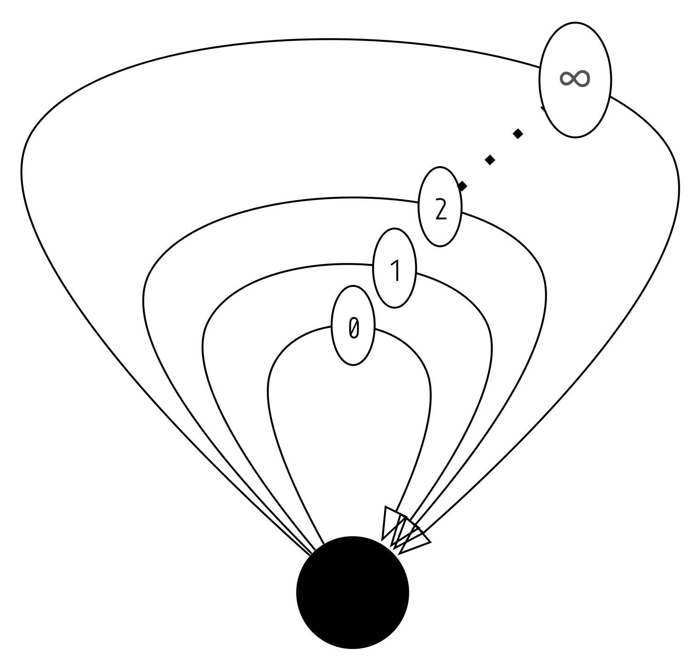
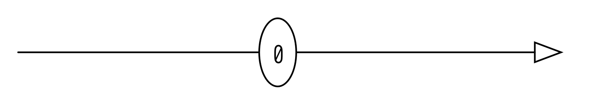
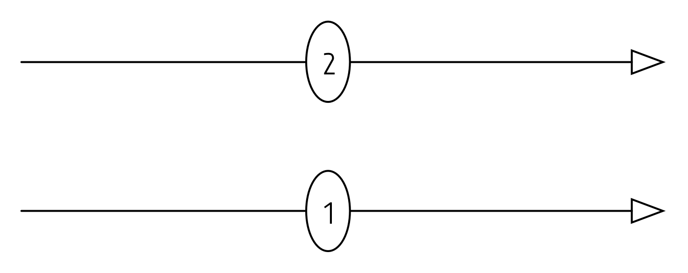
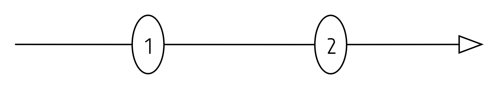
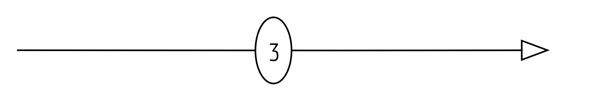

This is the second in a series of posts about category theory and its relationship with Haskell. We’ll be exploring monoids in this post!
A monoid is a mathematical object, just like a category, which we explored in the last post. Intuitively, a monoid is a structure which encodes the ability to concatenate two things, and a zero-like element which, when used in concatenation, does not affect the other element. Let’s look at a typical mathematical formulation of a monoid:
A monoid is a set M equipped with a binary operation × : m → m → m and a special element 1 ∈ M such that 1 and × satisfy the following laws:
I wouldn’t be surprised at this point if, even without a heavy mathematical background, one could come up with an example of a monoid. Let’s look at a couple.
The monoid {ℝ, ×, 1} is an obvious example of a monoid; that is, our set M is the real numbers, our binary operation is multiplication, and our 1 element is the number 1.
Another example of a monoid on numeric values is {ℤ, +, 0}; the integers under addition with 1 being 0.
In the programming world, monoids show up all over the place as well. A well-known monoid, using haskell syntax, is {[a], (++), []} – the monoid of lists under concatentation with 1 being the empty list.
As a haskell programmer, the aforementioned definition for a monoid looks awfully familiar. The typeclass for Monoid looks almost the exact same, sans axioms, and modulo names, as the traditional mathematical formulation:
class Monoid m where
mempty :: m -- Analogous to 1
mappend :: m -> m -> m -- Analogous to our binary operation We can even encode the three examples of monoids mentioned above in a very straightforward way:
-- Let's pretend Floats are the reals
-- {R, *, 1}
newtype Product = Product{ runProduct :: Float }
instance Monoid Product where
mempty = Product 1
mappend (Product a) (Product b) = Product (a * b)
-- {Z, +, 0}
newtype Sum = Sum{ runSum :: Integer }
instance Monoid Sum where
mempty = Sum 0
mappend (Sum a) (Sum b) = Sum (a + b)
-- This one is defined in the Prelude
-- {[a], ++, []}
instance Monoid [a] where
mempty = []
mappend xs ys = xs ++ ysWe have to verify that our instances follow the laws, which translated to haskell look like this:
-- Associativity
(a `mappend` b) `mappend` c == a `mappend` (b `mappend` c)
-- Left/right unit laws
mempty `mappend` a == a == a `mappend` memptyIt is not so hard to reason through these laws for the instances listed above.
We’re not done quite yet, because category theorists have picked up on a quaint definition of a monoid:
A monoid is a category with one object.
Well, that’s convenient. But what is really going on here? Let’s look at a visual representation of the category theory interpretation of {ℤ, +, 0} that we saw before*:

* The image gets a little messy with the negatives, but those are valid arrows as well.
Morphisms in our category are elements of ℤ. This can be confusing if we have some expectation about the way arrows should look. But, recall that to define a morphism, we only need to be able to assign a source and target to them, which are totally abstract concepts. Our set of morphisms is then exactly ℤ, where we just pick the same source and target for every single element.
id is the arrow labeled 0:

Here are two more arrows:

Composing these arrows gives us something that looks like this, intuitively:

Composition is addition, so this is equivalent to:

An important thing to note here is that the object doesn’t really matter. The above diagrams should make sense regardless of what the source and target of the arrows are, as long as they’re the same thing. Further, the source and target must be the same so we can compose freely. If they weren’t, we wouldn’t be guaranteed to “have access” to the start of any arrow in our monoid at the end of any other arrow, which would disallow composition. This means we necessarily only have a single object in our category.
So long as we have a monoid by the classical definition, we have a monoid by the category theoretical definition. The conceptual mapping of formulations (from classical to category theoretical) is:
The tricky thing here is that in category-theory-land, the morphisms might not really look like functions, or even arrows, as we might expect. An integer as a category morphism follows the laws if we plug in the right id and ∘, and that’s all that matters.
Let’s formulate the aforementioned Sum as a legitimate haskell Category (C for Category):
data SumC a b where
SumC :: Integer -> SumC a a
deriving instance Show (SumC a b)
instance Category SumC where
id = SumC 0
SumC x . SumC y = SumC (x + y)We can use GADTs to encode the monoid (read: category with a single object) of integers under addition. We are saying two things here:
SumC is constructed by an Integer (effectively, this means that a SumC is an Integer; this is just a wrapper.).SumC, we can only construct things of type SumC a a.In effect, if we view SumC as cat (the type of morphisms in a category), we can encode the monoid {ℤ, +, 0} exactly as a Category. If you look closely, you’ll notice that we only have a single object in our category, and we don’t care what it is. This is exactly a. A SumC can only be constructed in one way, namely, by asserting that its source and target is a. The identity arrow is 0, which we’d expect, and composing two arrows is adding their Integer values.
The category laws all hold, which you may check. This instance acts exactly like the builtin Monoid instance for the Sum we saw previously, modulo operator/function names*:
*Main> SumC 8 . id
SumC 8
*Main> id . SumC 8
SumC 8
*Main> SumC 17 . SumC 90
SumC 107* s/id/mempty, s/./+, s/SumC/Sum and you’ve got the original form.
Just like with a Category, this isn’t the only Monoid you can encode – you should be able to use this type of construction for any haskell Monoid.
Note that I wouldn’t actually recommend doing this in practice; it’s mainly a mental exercise. That said, I think it’s pretty cool that we can get very close to a category-theoretic formulation of what a monoid is in Haskell!